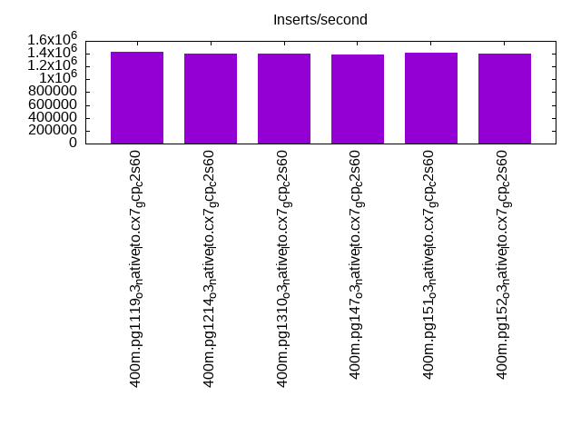

Introduction
This is a report for the insert benchmark with 400M docs and 20 client(s). It is generated by scripts (bash, awk, sed) and Tufte might not be impressed. An overview of the insert benchmark is here and a short update is here. Below, by DBMS, I mean DBMS+version.config. An example is my8020.c10b40 where my means MySQL, 8020 is version 8.0.20 and c10b40 is the name for the configuration file.
The test server is a c2-standard-60 from GCP with 30 cores, hyperthreading disabled, 240G RAM and 3T from XFS and SW RAID 0 striped over 8 local NVMe drives. The benchmark was run with 20 clients and there were 1 or 2 connections per client (1 for queries, 1 for inserts). The benchmark loads 400M rows without secondary indexes, creates secondary indexes, loads another 400M rows then does 3 read+write tests for one hour each that do queries as fast as possible with 100, 500 and then 1000 writes/second/client concurrent with the queries. Each read-write test runs for 1800 seconds. The test was configured to use a table per client. The database fits in the DBMS buffer pool. Clients and the DBMS share one server. The per-database configs are in the per-database subdirectories here.
The tested DBMS are:
- pg1119_o3_native_lto.cx7_gcp_c2s60 - Postgres 11.19, the cx7_gcp_c2s60 config and a build that uses -O3 -march=native -mtune=native -flto (link-time optimization)
- pg1214_o3_native_lto.cx7_gcp_c2s60 - Postgres 12.14, the cx7_gcp_c2s60 config and a build that uses -O3 -march=native -mtune=native -flto (link-time optimization)
- pg1310_o3_native_lto.cx7_gcp_c2s60 - Postgres 13.10, the cx7_gcp_c2s60 config and a build that uses -O3 -march=native -mtune=native -flto (link-time optimization)
- pg147_o3_native_lto.cx7_gcp_c2s60 - Postgres 14.7, the cx7_gcp_c2s60 config and a build that uses -O3 -march=native -mtune=native -flto (link-time optimization)
- pg151_o3_native_lto.cx7_gcp_c2s60 - Postgres 15.1, the cx7_gcp_c2s60 config and a build that uses -O3 -march=native -mtune=native -flto (link-time optimization)
- pg152_o3_native_lto.cx7_gcp_c2s60 - Postgres 15.2, the cx7_gcp_c2s60 config and a build that uses -O3 -march=native -mtune=native -flto (link-time optimization)
Contents
- Summary
- l.i0: load without secondary indexes
- l.x: create secondary indexes
- l.i1: continue load after secondary indexes created
- q100.1: range queries with 100 insert/s per client
- q500.1: range queries with 500 insert/s per client
- q1000.1: range queries with 1000 insert/s per client
Summary
The numbers are inserts/s for l.i0 and l.i1, indexed docs (or rows) /s for l.x and queries/s for q*.2. The values are the average rate over the entire test for inserts (IPS) and queries (QPS). The range of values for IPS and QPS is split into 3 parts: bottom 25%, middle 50%, top 25%. Values in the bottom 25% have a red background, values in the top 25% have a green background and values in the middle have no color. A gray background is used for values that can be ignored because the DBMS did not sustain the target insert rate. Red backgrounds are not used when the minimum value is within 80% of the max value.
| dbms | l.i0 | l.x | l.i1 | q100.1 | q500.1 | q1000.1 |
|---|---|---|---|---|---|---|
| 400m.pg1119_o3_native_lto.cx7_gcp_c2s60 | 1428571 | 2516352 | 406918 | 191643 | 193929 | 195925 |
| 400m.pg1214_o3_native_lto.cx7_gcp_c2s60 | 1403509 | 2564744 | 403226 | 198992 | 200609 | 204408 |
| 400m.pg1310_o3_native_lto.cx7_gcp_c2s60 | 1398601 | 2548408 | 391007 | 202283 | 202002 | 206280 |
| 400m.pg147_o3_native_lto.cx7_gcp_c2s60 | 1393728 | 2721769 | 413223 | 199384 | 201572 | 205260 |
| 400m.pg151_o3_native_lto.cx7_gcp_c2s60 | 1413428 | 2703378 | 411523 | 200643 | 202892 | 206586 |
| 400m.pg152_o3_native_lto.cx7_gcp_c2s60 | 1403509 | 2703378 | 408163 | 200679 | 201426 | 205134 |
This lists the average rate of inserts/s for the tests that do inserts concurrent with queries. For such tests the query rate is listed in the table above. The read+write tests are setup so that the insert rate should match the target rate every second. Cells that are not at least 95% of the target have a red background to indicate a failure to satisfy the target.
| dbms | q100.1 | q500.1 | q1000.1 |
|---|---|---|---|
| pg1119_o3_native_lto.cx7_gcp_c2s60 | 1976 | 9885 | 19748 |
| pg1214_o3_native_lto.cx7_gcp_c2s60 | 1976 | 9885 | 19769 |
| pg1310_o3_native_lto.cx7_gcp_c2s60 | 1976 | 9885 | 19769 |
| pg147_o3_native_lto.cx7_gcp_c2s60 | 1976 | 9885 | 19769 |
| pg151_o3_native_lto.cx7_gcp_c2s60 | 1976 | 9885 | 19769 |
| pg152_o3_native_lto.cx7_gcp_c2s60 | 1976 | 9885 | 19769 |
| target | 2000 | 10000 | 20000 |
l.i0
l.i0: load without secondary indexes. Graphs for performance per 1-second interval are here.
Average throughput:
Insert response time histogram: each cell has the percentage of responses that take <= the time in the header and max is the max response time in seconds. For the max column values in the top 25% of the range have a red background and in the bottom 25% of the range have a green background. The red background is not used when the min value is within 80% of the max value.
| dbms | 256us | 1ms | 4ms | 16ms | 64ms | 256ms | 1s | 4s | 16s | gt | max |
|---|---|---|---|---|---|---|---|---|---|---|---|
| pg1119_o3_native_lto.cx7_gcp_c2s60 | 60.984 | 38.162 | 0.805 | 0.013 | 0.024 | 0.013 | 0.756 | ||||
| pg1214_o3_native_lto.cx7_gcp_c2s60 | 59.796 | 39.346 | 0.799 | 0.026 | 0.020 | 0.014 | 0.913 | ||||
| pg1310_o3_native_lto.cx7_gcp_c2s60 | 58.623 | 40.556 | 0.776 | 0.012 | 0.019 | 0.013 | 0.780 | ||||
| pg147_o3_native_lto.cx7_gcp_c2s60 | 58.688 | 40.467 | 0.793 | 0.018 | 0.020 | 0.014 | 0.765 | ||||
| pg151_o3_native_lto.cx7_gcp_c2s60 | 59.717 | 39.458 | 0.775 | 0.014 | 0.023 | 0.014 | 0.637 | ||||
| pg152_o3_native_lto.cx7_gcp_c2s60 | 58.790 | 40.412 | 0.743 | 0.018 | 0.022 | 0.015 | 0.605 |
Performance metrics for the DBMS listed above. Some are normalized by throughput, others are not. Legend for results is here.
ips qps rps rmbps wps wmbps rpq rkbpq wpi wkbpi csps cpups cspq cpupq dbgb1 dbgb2 rss maxop p50 p99 tag 1428571 0 0 0.0 1878.0 470.4 0.000 0.000 0.001 0.337 236836 59.9 0.166 13 38.3 103.2 NA 0.756 81410 8391 400m.pg1119_o3_native_lto.cx7_gcp_c2s60 1403509 0 0 0.0 1842.3 466.1 0.000 0.000 0.001 0.340 232757 59.6 0.166 13 38.3 103.2 NA 0.913 79746 14484 400m.pg1214_o3_native_lto.cx7_gcp_c2s60 1398601 0 0 0.0 1880.2 466.2 0.000 0.000 0.001 0.341 252982 59.4 0.181 13 38.3 103.4 NA 0.780 79589 7392 400m.pg1310_o3_native_lto.cx7_gcp_c2s60 1393728 0 0 0.0 1837.9 462.7 0.000 0.000 0.001 0.340 242816 59.7 0.174 13 38.3 103.4 NA 0.765 78315 9689 400m.pg147_o3_native_lto.cx7_gcp_c2s60 1413428 0 0 0.0 1897.1 467.4 0.000 0.000 0.001 0.339 243763 59.8 0.172 13 38.3 103.4 0.0 0.637 80746 12685 400m.pg151_o3_native_lto.cx7_gcp_c2s60 1403509 0 0 0.0 1862.6 465.8 0.000 0.000 0.001 0.340 256157 59.0 0.183 13 38.3 103.4 0.0 0.605 79014 9590 400m.pg152_o3_native_lto.cx7_gcp_c2s60
l.x
l.x: create secondary indexes.
Average throughput:
Performance metrics for the DBMS listed above. Some are normalized by throughput, others are not. Legend for results is here.
ips qps rps rmbps wps wmbps rpq rkbpq wpi wkbpi csps cpups cspq cpupq dbgb1 dbgb2 rss maxop p50 p99 tag 2516352 0 7029 107.3 3445.1 849.0 0.003 0.044 0.001 0.345 102102 24.8 0.041 3 73.5 170.5 0.0 0.052 NA NA 400m.pg1119_o3_native_lto.cx7_gcp_c2s60 2564744 0 8411 112.9 3484.0 856.2 0.003 0.045 0.001 0.342 101553 25.1 0.040 3 73.5 170.5 0.0 0.314 NA NA 400m.pg1214_o3_native_lto.cx7_gcp_c2s60 2548408 0 9905 112.1 3471.0 851.8 0.004 0.045 0.001 0.342 103215 25.1 0.041 3 73.5 170.7 0.0 0.399 NA NA 400m.pg1310_o3_native_lto.cx7_gcp_c2s60 2721769 0 5266 95.7 3202.6 801.5 0.002 0.036 0.001 0.302 106331 26.7 0.039 3 73.5 170.7 0.0 0.249 NA NA 400m.pg147_o3_native_lto.cx7_gcp_c2s60 2703378 0 6568 99.7 3275.0 828.7 0.002 0.038 0.001 0.314 109170 26.1 0.040 3 73.5 171.7 0.0 0.103 NA NA 400m.pg151_o3_native_lto.cx7_gcp_c2s60 2703378 0 9760 107.1 3243.2 830.7 0.004 0.041 0.001 0.315 108973 26.0 0.040 3 73.5 171.7 0.0 0.055 NA NA 400m.pg152_o3_native_lto.cx7_gcp_c2s60
l.i1
l.i1: continue load after secondary indexes created. Graphs for performance per 1-second interval are here.
Average throughput:
Insert response time histogram: each cell has the percentage of responses that take <= the time in the header and max is the max response time in seconds. For the max column values in the top 25% of the range have a red background and in the bottom 25% of the range have a green background. The red background is not used when the min value is within 80% of the max value.
| dbms | 256us | 1ms | 4ms | 16ms | 64ms | 256ms | 1s | 4s | 16s | gt | max |
|---|---|---|---|---|---|---|---|---|---|---|---|
| pg1119_o3_native_lto.cx7_gcp_c2s60 | 0.010 | 96.127 | 2.179 | 1.641 | 0.033 | 0.010 | 0.796 | ||||
| pg1214_o3_native_lto.cx7_gcp_c2s60 | 0.004 | 96.022 | 2.295 | 1.631 | 0.040 | 0.008 | 0.819 | ||||
| pg1310_o3_native_lto.cx7_gcp_c2s60 | 0.035 | 95.889 | 2.323 | 1.704 | 0.038 | 0.012 | 0.969 | ||||
| pg147_o3_native_lto.cx7_gcp_c2s60 | 0.003 | 96.045 | 2.557 | 1.354 | 0.029 | 0.012 | nonzero | 1.058 | |||
| pg151_o3_native_lto.cx7_gcp_c2s60 | 0.003 | 95.882 | 2.722 | 1.350 | 0.028 | 0.014 | 0.802 | ||||
| pg152_o3_native_lto.cx7_gcp_c2s60 | 0.004 | 95.933 | 2.639 | 1.384 | 0.025 | 0.015 | nonzero | 1.073 |
Performance metrics for the DBMS listed above. Some are normalized by throughput, others are not. Legend for results is here.
ips qps rps rmbps wps wmbps rpq rkbpq wpi wkbpi csps cpups cspq cpupq dbgb1 dbgb2 rss maxop p50 p99 tag 406918 0 5063 45.3 3863.1 507.0 0.012 0.114 0.009 1.276 287873 50.4 0.707 37 165.8 323.6 NA 0.796 26421 1748 400m.pg1119_o3_native_lto.cx7_gcp_c2s60 403226 0 5405 44.7 3740.0 498.9 0.013 0.114 0.009 1.267 287816 50.4 0.714 37 163.1 318.3 0.0 0.819 26381 1798 400m.pg1214_o3_native_lto.cx7_gcp_c2s60 391007 0 4916 43.3 3570.6 495.2 0.013 0.113 0.009 1.297 308027 49.3 0.788 38 163.3 319.3 NA 0.969 25322 1798 400m.pg1310_o3_native_lto.cx7_gcp_c2s60 413223 0 5169 46.3 3193.8 527.4 0.013 0.115 0.008 1.307 305777 51.6 0.740 37 163.3 354.9 0.0 1.058 26332 1798 400m.pg147_o3_native_lto.cx7_gcp_c2s60 411523 0 5480 42.4 3249.1 533.4 0.013 0.106 0.008 1.327 301967 51.2 0.734 37 163.3 357.5 NA 0.802 26022 1748 400m.pg151_o3_native_lto.cx7_gcp_c2s60 408163 0 5261 45.3 3288.3 523.9 0.013 0.114 0.008 1.314 313851 50.9 0.769 37 163.3 356.5 0.0 1.073 26071 1848 400m.pg152_o3_native_lto.cx7_gcp_c2s60
q100.1
q100.1: range queries with 100 insert/s per client. Graphs for performance per 1-second interval are here.
Average throughput:
Query response time histogram: each cell has the percentage of responses that take <= the time in the header and max is the max response time in seconds. For max values in the top 25% of the range have a red background and in the bottom 25% of the range have a green background. The red background is not used when the min value is within 80% of the max value.
| dbms | 256us | 1ms | 4ms | 16ms | 64ms | 256ms | 1s | 4s | 16s | gt | max |
|---|---|---|---|---|---|---|---|---|---|---|---|
| pg1119_o3_native_lto.cx7_gcp_c2s60 | 99.968 | 0.025 | 0.006 | 0.001 | nonzero | 0.024 | |||||
| pg1214_o3_native_lto.cx7_gcp_c2s60 | 99.974 | 0.019 | 0.006 | 0.001 | nonzero | 0.026 | |||||
| pg1310_o3_native_lto.cx7_gcp_c2s60 | 99.976 | 0.018 | 0.006 | 0.001 | nonzero | 0.024 | |||||
| pg147_o3_native_lto.cx7_gcp_c2s60 | 99.976 | 0.017 | 0.006 | 0.001 | nonzero | 0.034 | |||||
| pg151_o3_native_lto.cx7_gcp_c2s60 | 99.976 | 0.016 | 0.006 | 0.001 | nonzero | 0.026 | |||||
| pg152_o3_native_lto.cx7_gcp_c2s60 | 99.977 | 0.017 | 0.006 | 0.001 | nonzero | nonzero | 0.073 |
Insert response time histogram: each cell has the percentage of responses that take <= the time in the header and max is the max response time in seconds. For max values in the top 25% of the range have a red background and in the bottom 25% of the range have a green background. The red background is not used when the min value is within 80% of the max value.
| dbms | 256us | 1ms | 4ms | 16ms | 64ms | 256ms | 1s | 4s | 16s | gt | max |
|---|---|---|---|---|---|---|---|---|---|---|---|
| pg1119_o3_native_lto.cx7_gcp_c2s60 | 95.682 | 3.364 | 0.939 | 0.015 | 0.185 | ||||||
| pg1214_o3_native_lto.cx7_gcp_c2s60 | 92.583 | 5.903 | 1.514 | 0.051 | |||||||
| pg1310_o3_native_lto.cx7_gcp_c2s60 | 92.054 | 5.771 | 2.160 | 0.015 | 0.123 | ||||||
| pg147_o3_native_lto.cx7_gcp_c2s60 | 95.801 | 3.460 | 0.729 | 0.010 | 0.080 | ||||||
| pg151_o3_native_lto.cx7_gcp_c2s60 | 94.090 | 4.844 | 1.065 | 0.049 | |||||||
| pg152_o3_native_lto.cx7_gcp_c2s60 | 92.774 | 5.997 | 1.203 | 0.026 | 0.107 |
Performance metrics for the DBMS listed above. Some are normalized by throughput, others are not. Legend for results is here.
ips qps rps rmbps wps wmbps rpq rkbpq wpi wkbpi csps cpups cspq cpupq dbgb1 dbgb2 rss maxop p50 p99 tag 1976 191643 0 0.0 3998.1 98.2 0.000 0.000 2.024 50.878 679241 63.0 3.544 99 166.6 292.5 0.0 0.024 9541 9142 400m.pg1119_o3_native_lto.cx7_gcp_c2s60 1976 198992 0 0.0 3991.6 97.0 0.000 0.000 2.020 50.280 705444 62.9 3.545 95 163.6 286.7 0.0 0.026 9877 9429 400m.pg1214_o3_native_lto.cx7_gcp_c2s60 1976 202283 0 0.0 3707.8 88.8 0.000 0.000 1.877 46.009 716261 62.9 3.541 93 163.9 266.0 0.0 0.024 9962 9541 400m.pg1310_o3_native_lto.cx7_gcp_c2s60 1976 199384 0 0.0 3561.0 85.1 0.000 0.000 1.802 44.107 710578 62.6 3.564 94 163.9 323.4 0.0 0.034 9909 9509 400m.pg147_o3_native_lto.cx7_gcp_c2s60 1976 200643 0 0.0 3578.3 85.3 0.000 0.000 1.811 44.205 714355 62.8 3.560 94 163.9 326.0 0.0 0.026 9973 9605 400m.pg151_o3_native_lto.cx7_gcp_c2s60 1976 200679 0 0.0 3577.9 85.1 0.000 0.000 1.811 44.109 714310 62.7 3.559 94 163.9 325.0 0.0 0.073 10041 9653 400m.pg152_o3_native_lto.cx7_gcp_c2s60
q500.1
q500.1: range queries with 500 insert/s per client. Graphs for performance per 1-second interval are here.
Average throughput:

Query response time histogram: each cell has the percentage of responses that take <= the time in the header and max is the max response time in seconds. For max values in the top 25% of the range have a red background and in the bottom 25% of the range have a green background. The red background is not used when the min value is within 80% of the max value.
| dbms | 256us | 1ms | 4ms | 16ms | 64ms | 256ms | 1s | 4s | 16s | gt | max |
|---|---|---|---|---|---|---|---|---|---|---|---|
| pg1119_o3_native_lto.cx7_gcp_c2s60 | 99.906 | 0.061 | 0.029 | 0.004 | nonzero | 0.053 | |||||
| pg1214_o3_native_lto.cx7_gcp_c2s60 | 99.913 | 0.055 | 0.029 | 0.003 | nonzero | 0.060 | |||||
| pg1310_o3_native_lto.cx7_gcp_c2s60 | 99.915 | 0.054 | 0.028 | 0.003 | nonzero | 0.063 | |||||
| pg147_o3_native_lto.cx7_gcp_c2s60 | 99.915 | 0.053 | 0.028 | 0.004 | nonzero | 0.059 | |||||
| pg151_o3_native_lto.cx7_gcp_c2s60 | 99.917 | 0.052 | 0.028 | 0.004 | nonzero | 0.056 | |||||
| pg152_o3_native_lto.cx7_gcp_c2s60 | 99.916 | 0.053 | 0.028 | 0.004 | nonzero | nonzero | 0.067 |
Insert response time histogram: each cell has the percentage of responses that take <= the time in the header and max is the max response time in seconds. For max values in the top 25% of the range have a red background and in the bottom 25% of the range have a green background. The red background is not used when the min value is within 80% of the max value.
| dbms | 256us | 1ms | 4ms | 16ms | 64ms | 256ms | 1s | 4s | 16s | gt | max |
|---|---|---|---|---|---|---|---|---|---|---|---|
| pg1119_o3_native_lto.cx7_gcp_c2s60 | 43.888 | 25.996 | 28.537 | 1.577 | 0.002 | 0.326 | |||||
| pg1214_o3_native_lto.cx7_gcp_c2s60 | 43.562 | 26.406 | 28.512 | 1.521 | 0.001 | 0.327 | |||||
| pg1310_o3_native_lto.cx7_gcp_c2s60 | 44.383 | 25.768 | 28.405 | 1.444 | 0.236 | ||||||
| pg147_o3_native_lto.cx7_gcp_c2s60 | 44.914 | 24.447 | 29.331 | 1.308 | 0.207 | ||||||
| pg151_o3_native_lto.cx7_gcp_c2s60 | 45.407 | 24.647 | 28.690 | 1.255 | 0.002 | 0.357 | |||||
| pg152_o3_native_lto.cx7_gcp_c2s60 | 45.207 | 24.648 | 28.909 | 1.235 | 0.187 |
Performance metrics for the DBMS listed above. Some are normalized by throughput, others are not. Legend for results is here.
ips qps rps rmbps wps wmbps rpq rkbpq wpi wkbpi csps cpups cspq cpupq dbgb1 dbgb2 rss maxop p50 p99 tag 9885 193929 0 0.0 6879.7 212.6 0.000 0.000 0.696 22.025 672766 64.1 3.469 99 171.6 260.9 0.0 0.053 9625 9110 400m.pg1119_o3_native_lto.cx7_gcp_c2s60 9885 200609 0 0.0 6441.9 210.8 0.000 0.000 0.652 21.833 698168 63.9 3.480 96 167.2 255.0 0.0 0.060 9909 9365 400m.pg1214_o3_native_lto.cx7_gcp_c2s60 9885 202002 0 0.0 6179.4 204.8 0.000 0.000 0.625 21.217 703278 63.9 3.482 95 167.5 244.9 0.0 0.063 10053 9510 400m.pg1310_o3_native_lto.cx7_gcp_c2s60 9885 201572 0 0.0 6390.1 196.8 0.000 0.000 0.646 20.389 705063 63.7 3.498 95 167.4 271.7 0.0 0.059 9989 9446 400m.pg147_o3_native_lto.cx7_gcp_c2s60 9885 202892 0 0.0 6350.4 195.9 0.000 0.000 0.642 20.294 708623 63.8 3.493 94 167.4 272.3 0.0 0.056 10069 9530 400m.pg151_o3_native_lto.cx7_gcp_c2s60 9885 201426 0 0.0 6271.8 194.8 0.000 0.000 0.634 20.180 704068 63.8 3.495 95 167.5 270.9 0.0 0.067 10005 9494 400m.pg152_o3_native_lto.cx7_gcp_c2s60
q1000.1
q1000.1: range queries with 1000 insert/s per client. Graphs for performance per 1-second interval are here.
Average throughput:
Query response time histogram: each cell has the percentage of responses that take <= the time in the header and max is the max response time in seconds. For max values in the top 25% of the range have a red background and in the bottom 25% of the range have a green background. The red background is not used when the min value is within 80% of the max value.
| dbms | 256us | 1ms | 4ms | 16ms | 64ms | 256ms | 1s | 4s | 16s | gt | max |
|---|---|---|---|---|---|---|---|---|---|---|---|
| pg1119_o3_native_lto.cx7_gcp_c2s60 | 99.842 | 0.108 | 0.043 | 0.007 | nonzero | nonzero | nonzero | 0.420 | |||
| pg1214_o3_native_lto.cx7_gcp_c2s60 | 99.855 | 0.095 | 0.042 | 0.007 | 0.001 | nonzero | 0.083 | ||||
| pg1310_o3_native_lto.cx7_gcp_c2s60 | 99.855 | 0.095 | 0.042 | 0.007 | 0.001 | nonzero | 0.093 | ||||
| pg147_o3_native_lto.cx7_gcp_c2s60 | 99.860 | 0.092 | 0.041 | 0.007 | nonzero | nonzero | 0.086 | ||||
| pg151_o3_native_lto.cx7_gcp_c2s60 | 99.863 | 0.089 | 0.041 | 0.007 | nonzero | 0.060 | |||||
| pg152_o3_native_lto.cx7_gcp_c2s60 | 99.860 | 0.092 | 0.041 | 0.007 | nonzero | nonzero | 0.092 |
Insert response time histogram: each cell has the percentage of responses that take <= the time in the header and max is the max response time in seconds. For max values in the top 25% of the range have a red background and in the bottom 25% of the range have a green background. The red background is not used when the min value is within 80% of the max value.
| dbms | 256us | 1ms | 4ms | 16ms | 64ms | 256ms | 1s | 4s | 16s | gt | max |
|---|---|---|---|---|---|---|---|---|---|---|---|
| pg1119_o3_native_lto.cx7_gcp_c2s60 | 66.971 | 17.617 | 14.687 | 0.716 | 0.005 | 0.004 | 2.446 | ||||
| pg1214_o3_native_lto.cx7_gcp_c2s60 | 56.757 | 22.223 | 19.875 | 1.146 | 0.231 | ||||||
| pg1310_o3_native_lto.cx7_gcp_c2s60 | 56.539 | 21.159 | 20.734 | 1.567 | 0.001 | 0.278 | |||||
| pg147_o3_native_lto.cx7_gcp_c2s60 | 58.709 | 21.450 | 18.923 | 0.918 | 0.218 | ||||||
| pg151_o3_native_lto.cx7_gcp_c2s60 | 59.319 | 21.184 | 18.631 | 0.866 | 0.209 | ||||||
| pg152_o3_native_lto.cx7_gcp_c2s60 | 58.283 | 21.704 | 19.109 | 0.904 | 0.208 |
Performance metrics for the DBMS listed above. Some are normalized by throughput, others are not. Legend for results is here.
ips qps rps rmbps wps wmbps rpq rkbpq wpi wkbpi csps cpups cspq cpupq dbgb1 dbgb2 rss maxop p50 p99 tag 19748 195925 63 0.5 6516.3 297.0 0.000 0.003 0.330 15.399 663899 65.4 3.389 100 185.4 268.1 0.0 0.420 9749 8966 400m.pg1119_o3_native_lto.cx7_gcp_c2s60 19769 204408 0 0.0 5542.4 296.4 0.000 0.000 0.280 15.351 690868 65.2 3.380 96 179.3 262.7 0.0 0.083 10149 9257 400m.pg1214_o3_native_lto.cx7_gcp_c2s60 19769 206280 0 0.0 5634.1 306.4 0.000 0.000 0.285 15.872 697095 65.1 3.379 95 179.6 259.6 0.0 0.093 10249 9302 400m.pg1310_o3_native_lto.cx7_gcp_c2s60 19769 205260 0 0.0 6299.3 265.5 0.000 0.000 0.319 13.751 697236 64.9 3.397 95 179.6 280.4 0.0 0.086 10216 9398 400m.pg147_o3_native_lto.cx7_gcp_c2s60 19769 206586 0 0.0 6302.9 266.1 0.000 0.000 0.319 13.783 701415 64.9 3.395 94 179.6 280.7 0.0 0.060 10293 9382 400m.pg151_o3_native_lto.cx7_gcp_c2s60 19769 205134 0 0.0 6333.6 267.9 0.000 0.000 0.320 13.876 696688 64.9 3.396 95 179.6 279.8 0.0 0.092 10153 9238 400m.pg152_o3_native_lto.cx7_gcp_c2s60
l.i0
l.i0: load without secondary indexes
Performance metrics for all DBMS, not just the ones listed above. Some are normalized by throughput, others are not. Legend for results is here.
ips qps rps rmbps wps wmbps rpq rkbpq wpi wkbpi csps cpups cspq cpupq dbgb1 dbgb2 rss maxop p50 p99 tag 1428571 0 0 0.0 1878.0 470.4 0.000 0.000 0.001 0.337 236836 59.9 0.166 13 38.3 103.2 NA 0.756 81410 8391 400m.pg1119_o3_native_lto.cx7_gcp_c2s60 1403509 0 0 0.0 1842.3 466.1 0.000 0.000 0.001 0.340 232757 59.6 0.166 13 38.3 103.2 NA 0.913 79746 14484 400m.pg1214_o3_native_lto.cx7_gcp_c2s60 1398601 0 0 0.0 1880.2 466.2 0.000 0.000 0.001 0.341 252982 59.4 0.181 13 38.3 103.4 NA 0.780 79589 7392 400m.pg1310_o3_native_lto.cx7_gcp_c2s60 1393728 0 0 0.0 1837.9 462.7 0.000 0.000 0.001 0.340 242816 59.7 0.174 13 38.3 103.4 NA 0.765 78315 9689 400m.pg147_o3_native_lto.cx7_gcp_c2s60 1413428 0 0 0.0 1897.1 467.4 0.000 0.000 0.001 0.339 243763 59.8 0.172 13 38.3 103.4 0.0 0.637 80746 12685 400m.pg151_o3_native_lto.cx7_gcp_c2s60 1403509 0 0 0.0 1862.6 465.8 0.000 0.000 0.001 0.340 256157 59.0 0.183 13 38.3 103.4 0.0 0.605 79014 9590 400m.pg152_o3_native_lto.cx7_gcp_c2s60
l.x
l.x: create secondary indexes
Performance metrics for all DBMS, not just the ones listed above. Some are normalized by throughput, others are not. Legend for results is here.
ips qps rps rmbps wps wmbps rpq rkbpq wpi wkbpi csps cpups cspq cpupq dbgb1 dbgb2 rss maxop p50 p99 tag 2516352 0 7029 107.3 3445.1 849.0 0.003 0.044 0.001 0.345 102102 24.8 0.041 3 73.5 170.5 0.0 0.052 NA NA 400m.pg1119_o3_native_lto.cx7_gcp_c2s60 2564744 0 8411 112.9 3484.0 856.2 0.003 0.045 0.001 0.342 101553 25.1 0.040 3 73.5 170.5 0.0 0.314 NA NA 400m.pg1214_o3_native_lto.cx7_gcp_c2s60 2548408 0 9905 112.1 3471.0 851.8 0.004 0.045 0.001 0.342 103215 25.1 0.041 3 73.5 170.7 0.0 0.399 NA NA 400m.pg1310_o3_native_lto.cx7_gcp_c2s60 2721769 0 5266 95.7 3202.6 801.5 0.002 0.036 0.001 0.302 106331 26.7 0.039 3 73.5 170.7 0.0 0.249 NA NA 400m.pg147_o3_native_lto.cx7_gcp_c2s60 2703378 0 6568 99.7 3275.0 828.7 0.002 0.038 0.001 0.314 109170 26.1 0.040 3 73.5 171.7 0.0 0.103 NA NA 400m.pg151_o3_native_lto.cx7_gcp_c2s60 2703378 0 9760 107.1 3243.2 830.7 0.004 0.041 0.001 0.315 108973 26.0 0.040 3 73.5 171.7 0.0 0.055 NA NA 400m.pg152_o3_native_lto.cx7_gcp_c2s60
l.i1
l.i1: continue load after secondary indexes created
Performance metrics for all DBMS, not just the ones listed above. Some are normalized by throughput, others are not. Legend for results is here.
ips qps rps rmbps wps wmbps rpq rkbpq wpi wkbpi csps cpups cspq cpupq dbgb1 dbgb2 rss maxop p50 p99 tag 406918 0 5063 45.3 3863.1 507.0 0.012 0.114 0.009 1.276 287873 50.4 0.707 37 165.8 323.6 NA 0.796 26421 1748 400m.pg1119_o3_native_lto.cx7_gcp_c2s60 403226 0 5405 44.7 3740.0 498.9 0.013 0.114 0.009 1.267 287816 50.4 0.714 37 163.1 318.3 0.0 0.819 26381 1798 400m.pg1214_o3_native_lto.cx7_gcp_c2s60 391007 0 4916 43.3 3570.6 495.2 0.013 0.113 0.009 1.297 308027 49.3 0.788 38 163.3 319.3 NA 0.969 25322 1798 400m.pg1310_o3_native_lto.cx7_gcp_c2s60 413223 0 5169 46.3 3193.8 527.4 0.013 0.115 0.008 1.307 305777 51.6 0.740 37 163.3 354.9 0.0 1.058 26332 1798 400m.pg147_o3_native_lto.cx7_gcp_c2s60 411523 0 5480 42.4 3249.1 533.4 0.013 0.106 0.008 1.327 301967 51.2 0.734 37 163.3 357.5 NA 0.802 26022 1748 400m.pg151_o3_native_lto.cx7_gcp_c2s60 408163 0 5261 45.3 3288.3 523.9 0.013 0.114 0.008 1.314 313851 50.9 0.769 37 163.3 356.5 0.0 1.073 26071 1848 400m.pg152_o3_native_lto.cx7_gcp_c2s60
q100.1
q100.1: range queries with 100 insert/s per client
Performance metrics for all DBMS, not just the ones listed above. Some are normalized by throughput, others are not. Legend for results is here.
ips qps rps rmbps wps wmbps rpq rkbpq wpi wkbpi csps cpups cspq cpupq dbgb1 dbgb2 rss maxop p50 p99 tag 1976 191643 0 0.0 3998.1 98.2 0.000 0.000 2.024 50.878 679241 63.0 3.544 99 166.6 292.5 0.0 0.024 9541 9142 400m.pg1119_o3_native_lto.cx7_gcp_c2s60 1976 198992 0 0.0 3991.6 97.0 0.000 0.000 2.020 50.280 705444 62.9 3.545 95 163.6 286.7 0.0 0.026 9877 9429 400m.pg1214_o3_native_lto.cx7_gcp_c2s60 1976 202283 0 0.0 3707.8 88.8 0.000 0.000 1.877 46.009 716261 62.9 3.541 93 163.9 266.0 0.0 0.024 9962 9541 400m.pg1310_o3_native_lto.cx7_gcp_c2s60 1976 199384 0 0.0 3561.0 85.1 0.000 0.000 1.802 44.107 710578 62.6 3.564 94 163.9 323.4 0.0 0.034 9909 9509 400m.pg147_o3_native_lto.cx7_gcp_c2s60 1976 200643 0 0.0 3578.3 85.3 0.000 0.000 1.811 44.205 714355 62.8 3.560 94 163.9 326.0 0.0 0.026 9973 9605 400m.pg151_o3_native_lto.cx7_gcp_c2s60 1976 200679 0 0.0 3577.9 85.1 0.000 0.000 1.811 44.109 714310 62.7 3.559 94 163.9 325.0 0.0 0.073 10041 9653 400m.pg152_o3_native_lto.cx7_gcp_c2s60
q500.1
q500.1: range queries with 500 insert/s per client
Performance metrics for all DBMS, not just the ones listed above. Some are normalized by throughput, others are not. Legend for results is here.
ips qps rps rmbps wps wmbps rpq rkbpq wpi wkbpi csps cpups cspq cpupq dbgb1 dbgb2 rss maxop p50 p99 tag 9885 193929 0 0.0 6879.7 212.6 0.000 0.000 0.696 22.025 672766 64.1 3.469 99 171.6 260.9 0.0 0.053 9625 9110 400m.pg1119_o3_native_lto.cx7_gcp_c2s60 9885 200609 0 0.0 6441.9 210.8 0.000 0.000 0.652 21.833 698168 63.9 3.480 96 167.2 255.0 0.0 0.060 9909 9365 400m.pg1214_o3_native_lto.cx7_gcp_c2s60 9885 202002 0 0.0 6179.4 204.8 0.000 0.000 0.625 21.217 703278 63.9 3.482 95 167.5 244.9 0.0 0.063 10053 9510 400m.pg1310_o3_native_lto.cx7_gcp_c2s60 9885 201572 0 0.0 6390.1 196.8 0.000 0.000 0.646 20.389 705063 63.7 3.498 95 167.4 271.7 0.0 0.059 9989 9446 400m.pg147_o3_native_lto.cx7_gcp_c2s60 9885 202892 0 0.0 6350.4 195.9 0.000 0.000 0.642 20.294 708623 63.8 3.493 94 167.4 272.3 0.0 0.056 10069 9530 400m.pg151_o3_native_lto.cx7_gcp_c2s60 9885 201426 0 0.0 6271.8 194.8 0.000 0.000 0.634 20.180 704068 63.8 3.495 95 167.5 270.9 0.0 0.067 10005 9494 400m.pg152_o3_native_lto.cx7_gcp_c2s60
q1000.1
q1000.1: range queries with 1000 insert/s per client
Performance metrics for all DBMS, not just the ones listed above. Some are normalized by throughput, others are not. Legend for results is here.
ips qps rps rmbps wps wmbps rpq rkbpq wpi wkbpi csps cpups cspq cpupq dbgb1 dbgb2 rss maxop p50 p99 tag 19748 195925 63 0.5 6516.3 297.0 0.000 0.003 0.330 15.399 663899 65.4 3.389 100 185.4 268.1 0.0 0.420 9749 8966 400m.pg1119_o3_native_lto.cx7_gcp_c2s60 19769 204408 0 0.0 5542.4 296.4 0.000 0.000 0.280 15.351 690868 65.2 3.380 96 179.3 262.7 0.0 0.083 10149 9257 400m.pg1214_o3_native_lto.cx7_gcp_c2s60 19769 206280 0 0.0 5634.1 306.4 0.000 0.000 0.285 15.872 697095 65.1 3.379 95 179.6 259.6 0.0 0.093 10249 9302 400m.pg1310_o3_native_lto.cx7_gcp_c2s60 19769 205260 0 0.0 6299.3 265.5 0.000 0.000 0.319 13.751 697236 64.9 3.397 95 179.6 280.4 0.0 0.086 10216 9398 400m.pg147_o3_native_lto.cx7_gcp_c2s60 19769 206586 0 0.0 6302.9 266.1 0.000 0.000 0.319 13.783 701415 64.9 3.395 94 179.6 280.7 0.0 0.060 10293 9382 400m.pg151_o3_native_lto.cx7_gcp_c2s60 19769 205134 0 0.0 6333.6 267.9 0.000 0.000 0.320 13.876 696688 64.9 3.396 95 179.6 279.8 0.0 0.092 10153 9238 400m.pg152_o3_native_lto.cx7_gcp_c2s60
l.i0
- l.i0: load without secondary indexes
- Legend for results is here.
- Each entry lists the percentage of responses that fit in that bucket (slower than max time for previous bucket, faster than min time for next bucket).
Insert response time histogram
256us 1ms 4ms 16ms 64ms 256ms 1s 4s 16s gt max tag 0.000 60.984 38.162 0.805 0.013 0.024 0.013 0.000 0.000 0.000 0.756 pg1119_o3_native_lto.cx7_gcp_c2s60 0.000 59.796 39.346 0.799 0.026 0.020 0.014 0.000 0.000 0.000 0.913 pg1214_o3_native_lto.cx7_gcp_c2s60 0.000 58.623 40.556 0.776 0.012 0.019 0.013 0.000 0.000 0.000 0.780 pg1310_o3_native_lto.cx7_gcp_c2s60 0.000 58.688 40.467 0.793 0.018 0.020 0.014 0.000 0.000 0.000 0.765 pg147_o3_native_lto.cx7_gcp_c2s60 0.000 59.717 39.458 0.775 0.014 0.023 0.014 0.000 0.000 0.000 0.637 pg151_o3_native_lto.cx7_gcp_c2s60 0.000 58.790 40.412 0.743 0.018 0.022 0.015 0.000 0.000 0.000 0.605 pg152_o3_native_lto.cx7_gcp_c2s60
l.x
- l.x: create secondary indexes
- Legend for results is here.
- Each entry lists the percentage of responses that fit in that bucket (slower than max time for previous bucket, faster than min time for next bucket).
TODO - determine whether there is data for create index response time
l.i1
- l.i1: continue load after secondary indexes created
- Legend for results is here.
- Each entry lists the percentage of responses that fit in that bucket (slower than max time for previous bucket, faster than min time for next bucket).
Insert response time histogram
256us 1ms 4ms 16ms 64ms 256ms 1s 4s 16s gt max tag 0.000 0.010 96.127 2.179 1.641 0.033 0.010 0.000 0.000 0.000 0.796 pg1119_o3_native_lto.cx7_gcp_c2s60 0.000 0.004 96.022 2.295 1.631 0.040 0.008 0.000 0.000 0.000 0.819 pg1214_o3_native_lto.cx7_gcp_c2s60 0.000 0.035 95.889 2.323 1.704 0.038 0.012 0.000 0.000 0.000 0.969 pg1310_o3_native_lto.cx7_gcp_c2s60 0.000 0.003 96.045 2.557 1.354 0.029 0.012 nonzero 0.000 0.000 1.058 pg147_o3_native_lto.cx7_gcp_c2s60 0.000 0.003 95.882 2.722 1.350 0.028 0.014 0.000 0.000 0.000 0.802 pg151_o3_native_lto.cx7_gcp_c2s60 0.000 0.004 95.933 2.639 1.384 0.025 0.015 nonzero 0.000 0.000 1.073 pg152_o3_native_lto.cx7_gcp_c2s60
q100.1
- q100.1: range queries with 100 insert/s per client
- Legend for results is here.
- Each entry lists the percentage of responses that fit in that bucket (slower than max time for previous bucket, faster than min time for next bucket).
Query response time histogram
256us 1ms 4ms 16ms 64ms 256ms 1s 4s 16s gt max tag 99.968 0.025 0.006 0.001 nonzero 0.000 0.000 0.000 0.000 0.000 0.024 pg1119_o3_native_lto.cx7_gcp_c2s60 99.974 0.019 0.006 0.001 nonzero 0.000 0.000 0.000 0.000 0.000 0.026 pg1214_o3_native_lto.cx7_gcp_c2s60 99.976 0.018 0.006 0.001 nonzero 0.000 0.000 0.000 0.000 0.000 0.024 pg1310_o3_native_lto.cx7_gcp_c2s60 99.976 0.017 0.006 0.001 nonzero 0.000 0.000 0.000 0.000 0.000 0.034 pg147_o3_native_lto.cx7_gcp_c2s60 99.976 0.016 0.006 0.001 nonzero 0.000 0.000 0.000 0.000 0.000 0.026 pg151_o3_native_lto.cx7_gcp_c2s60 99.977 0.017 0.006 0.001 nonzero nonzero 0.000 0.000 0.000 0.000 0.073 pg152_o3_native_lto.cx7_gcp_c2s60
Insert response time histogram
256us 1ms 4ms 16ms 64ms 256ms 1s 4s 16s gt max tag 0.000 0.000 95.682 3.364 0.939 0.015 0.000 0.000 0.000 0.000 0.185 pg1119_o3_native_lto.cx7_gcp_c2s60 0.000 0.000 92.583 5.903 1.514 0.000 0.000 0.000 0.000 0.000 0.051 pg1214_o3_native_lto.cx7_gcp_c2s60 0.000 0.000 92.054 5.771 2.160 0.015 0.000 0.000 0.000 0.000 0.123 pg1310_o3_native_lto.cx7_gcp_c2s60 0.000 0.000 95.801 3.460 0.729 0.010 0.000 0.000 0.000 0.000 0.080 pg147_o3_native_lto.cx7_gcp_c2s60 0.000 0.000 94.090 4.844 1.065 0.000 0.000 0.000 0.000 0.000 0.049 pg151_o3_native_lto.cx7_gcp_c2s60 0.000 0.000 92.774 5.997 1.203 0.026 0.000 0.000 0.000 0.000 0.107 pg152_o3_native_lto.cx7_gcp_c2s60
q500.1
- q500.1: range queries with 500 insert/s per client
- Legend for results is here.
- Each entry lists the percentage of responses that fit in that bucket (slower than max time for previous bucket, faster than min time for next bucket).
Query response time histogram
256us 1ms 4ms 16ms 64ms 256ms 1s 4s 16s gt max tag 99.906 0.061 0.029 0.004 nonzero 0.000 0.000 0.000 0.000 0.000 0.053 pg1119_o3_native_lto.cx7_gcp_c2s60 99.913 0.055 0.029 0.003 nonzero 0.000 0.000 0.000 0.000 0.000 0.060 pg1214_o3_native_lto.cx7_gcp_c2s60 99.915 0.054 0.028 0.003 nonzero 0.000 0.000 0.000 0.000 0.000 0.063 pg1310_o3_native_lto.cx7_gcp_c2s60 99.915 0.053 0.028 0.004 nonzero 0.000 0.000 0.000 0.000 0.000 0.059 pg147_o3_native_lto.cx7_gcp_c2s60 99.917 0.052 0.028 0.004 nonzero 0.000 0.000 0.000 0.000 0.000 0.056 pg151_o3_native_lto.cx7_gcp_c2s60 99.916 0.053 0.028 0.004 nonzero nonzero 0.000 0.000 0.000 0.000 0.067 pg152_o3_native_lto.cx7_gcp_c2s60
Insert response time histogram
256us 1ms 4ms 16ms 64ms 256ms 1s 4s 16s gt max tag 0.000 0.000 43.888 25.996 28.537 1.577 0.002 0.000 0.000 0.000 0.326 pg1119_o3_native_lto.cx7_gcp_c2s60 0.000 0.000 43.562 26.406 28.512 1.521 0.001 0.000 0.000 0.000 0.327 pg1214_o3_native_lto.cx7_gcp_c2s60 0.000 0.000 44.383 25.768 28.405 1.444 0.000 0.000 0.000 0.000 0.236 pg1310_o3_native_lto.cx7_gcp_c2s60 0.000 0.000 44.914 24.447 29.331 1.308 0.000 0.000 0.000 0.000 0.207 pg147_o3_native_lto.cx7_gcp_c2s60 0.000 0.000 45.407 24.647 28.690 1.255 0.002 0.000 0.000 0.000 0.357 pg151_o3_native_lto.cx7_gcp_c2s60 0.000 0.000 45.207 24.648 28.909 1.235 0.000 0.000 0.000 0.000 0.187 pg152_o3_native_lto.cx7_gcp_c2s60
q1000.1
- q1000.1: range queries with 1000 insert/s per client
- Legend for results is here.
- Each entry lists the percentage of responses that fit in that bucket (slower than max time for previous bucket, faster than min time for next bucket).
Query response time histogram
256us 1ms 4ms 16ms 64ms 256ms 1s 4s 16s gt max tag 99.842 0.108 0.043 0.007 nonzero nonzero nonzero 0.000 0.000 0.000 0.420 pg1119_o3_native_lto.cx7_gcp_c2s60 99.855 0.095 0.042 0.007 0.001 nonzero 0.000 0.000 0.000 0.000 0.083 pg1214_o3_native_lto.cx7_gcp_c2s60 99.855 0.095 0.042 0.007 0.001 nonzero 0.000 0.000 0.000 0.000 0.093 pg1310_o3_native_lto.cx7_gcp_c2s60 99.860 0.092 0.041 0.007 nonzero nonzero 0.000 0.000 0.000 0.000 0.086 pg147_o3_native_lto.cx7_gcp_c2s60 99.863 0.089 0.041 0.007 nonzero 0.000 0.000 0.000 0.000 0.000 0.060 pg151_o3_native_lto.cx7_gcp_c2s60 99.860 0.092 0.041 0.007 nonzero nonzero 0.000 0.000 0.000 0.000 0.092 pg152_o3_native_lto.cx7_gcp_c2s60
Insert response time histogram
256us 1ms 4ms 16ms 64ms 256ms 1s 4s 16s gt max tag 0.000 0.000 66.971 17.617 14.687 0.716 0.005 0.004 0.000 0.000 2.446 pg1119_o3_native_lto.cx7_gcp_c2s60 0.000 0.000 56.757 22.223 19.875 1.146 0.000 0.000 0.000 0.000 0.231 pg1214_o3_native_lto.cx7_gcp_c2s60 0.000 0.000 56.539 21.159 20.734 1.567 0.001 0.000 0.000 0.000 0.278 pg1310_o3_native_lto.cx7_gcp_c2s60 0.000 0.000 58.709 21.450 18.923 0.918 0.000 0.000 0.000 0.000 0.218 pg147_o3_native_lto.cx7_gcp_c2s60 0.000 0.000 59.319 21.184 18.631 0.866 0.000 0.000 0.000 0.000 0.209 pg151_o3_native_lto.cx7_gcp_c2s60 0.000 0.000 58.283 21.704 19.109 0.904 0.000 0.000 0.000 0.000 0.208 pg152_o3_native_lto.cx7_gcp_c2s60